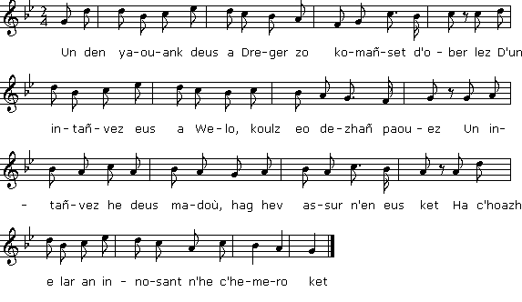

|
A propos de la mélodie: Cette mélodie a été publiée, en février 1896, par Alfred Bourgeois dans le "Bulletin de la société académique de Brest" 1895-1896 (2ème série tome XXI, page 349). Elle lui fut chantée en juillet 1860 par un jeune soldat nommé Yvon Le Cam, de Trégonneau (Côtes-du-Nord). Bibliographie Ce chant a été également collecté: - Par J.-M. de Penguern, collection de manuscrits Tome 91, 166: "Eun intañvez deus a Wenou"; - et par Alfred Bourgeois (réf. ci-dessus). Remarques On a également donné in extenso la version de Penguern, pleine de verve et de causticité. Terrupl, terrupl, kadeik yaouank, en em istimit 'balamour d'ho pegeit livrinn ha d'ho korf digajet! (div w.) Renn a vefet arru d'am [n]oad c'hwi 'n nevo chanjet... Allez, allez, jeune cadet, vantez-vous donc De votre teint frais du moment et votre taille dégagée! (bis) Quand vous serez parvenu à mon âge, vous aussi vous aurez changé... Depuis la publication en ligne du 2ème carnet de collecte de La Villemarqué, on sait qu'il y a consigné, pp.123 et 124, une seconde variante de ce chant en 8 quatrains. On y présente le jeune homme comme un Gall, donc un non-bretonnant, doté d'une moralité à toute épreuve! |
About the tune This song (lyrics and melody) was published in February 1896, by Colonel Alfred Bourgeois in the review "Bulletin de la société académique de Brest" 1895-1896 (2nd series book XXI, page 349). He learned it from the singing in July 1860 of a young soldier named Yvon Le Cam, at Trégonneau (Côtes-d'Armor). Bibliography This song was also collected: - By J.-M. de Penguern, MS collection Part 91, 166: "Eun intañvez deus a Wenou"; - and by Col. Alfred Bourgeois (see above). Remark The "de Penguern" version was appended in full so that the reader may enjoy the vigour of its pithy style. Terrupl, terrupl, kadeik yaouank, en em istimit 'balamour d'ho pegeit livrinn ha d'ho korf digajet! (div w.) Renn a vefet arru d'am [n]oad c'hwi 'n nevo chanjet... Come on, come on, young cadet, boast your fill Of your now so fresh complexion and slender waist! (twice) When you are as old as I am, you will have changed, too... Since the online publication of the 2nd collection book of La Villemarqué, we know that he recorded a second variant of this song in 8 quatrains, on pp. 123 and 124. It presents the young man as a Gall, i.e. a non-Breton speaker, with foolproof moral standards! |
|
BREZHONEK p. 254 1. An intañvez d'eus a Wened a zo oc'h ober al lez D'ur c'hloarek d'eus a Gerne, koulz e ve paouez: - An intañvez he-deus madoù, ha c'hwi n'ho-peus ket Ha c'hoazh 'ta, va c'hloarek yaouank, n'o gemerit ket! a. - Sonjet on e-kreiz va c'halon ha sonjal a rin: Ken e kavin ur plac'h yaouank hag a blijo din, Ken e kavin ur plac'h yaouank vo d'am zañtimant, Evit kavout kozh intañvez 'm-bo ket va zourmant. b. Gwell eo ganin be'añ oblijet noz ha deiz da luskellat, Evit klevet kozh intañvez 'tal an tan o wigourat; Gwell eo ganin be'añ oblijet da luskellat noz ha deiz Evit tennañ kozh intañvez e-maez un toull-flaer! 2. - Pevar kant skoed en aour melen, deoc'h-c'hwi me 'm-eus roet Pa 'z afen-me deus ar ger-mañ, m'eo red o kaoued, - Pevar kant skoed en aour melen din-me ho-peus roet, 'N ur jupenn ne'ez, 'n un inkane me 'm-eus o lakaet. 3. Va jupenn ne'ez a zo uzet, va marc'h zo marv, Roit kemend-all, intañvez, me n'o implijo! E bep-lec'h e-lec'h ma yen-me, me ho enoro: Hag a rin deoc'h kouplad bouchoù evit ho madoù. 4. - O c'hwi, O c'hwi kloarek yaouank, a zo lik 'n ho pek: Pa ve'et-c'hwi deuet d'an oad-me, e vezo cheñchet. Pa ve'et-c'hwi deuet d'an oad-me, c'hwi cheñcho feson, Spisial mar vec'h-c'hwi sujet d'em opinion. KLT gant Christian Souchon |
TRADUCTION FRANCAISE p. 254 1. Veuve de Vannes qui faites, depuis longtemps les yeux doux A ce clerc de Cornouaille, mais quand donc cesserez-vous? - Cette veuve est des plus riches. Quant à vous, vous n'avez rien. Mais, son bien, brave jeune homme, vous n'en voulez point! a. - Souvent j'ai sondé mon âme, souvent je la sonde encor: Si je viens à prendre femme, la condition est qu'alors L'élue de mon cur soit jeune, puis qu'elle soit à mon goût. Au diable la vieille veuve! Je ne suis pas fou! b. Qu'à balancer on m'oblige un berceau cela me plait mieux Qu'entendre la vieille veuve toujours grogner près du feu. Un enfant, que je le berce! Même si c'est jour et nuit Plutôt qu'avoir une vieille au fond de mon taudis. 2. - Quatre cents écus d'or jaune, qu'un jour je vous ai donnés. S'il faut que d'ici je sorte, je veux que vous les rendiez! - Quatre cents écus d'or jaune; mais dont vous me fîtes don Pour payer ma veste neuve, ainsi qu'un étalon. 3. Ma veste neuve est usée, mon pauvre cheval est mort. Donnez-m'en autant, la veuve! Vous verrez, je me fais fort De leur trouver un usage. Dans tous les lieux où j'irai, Je chanterai vous louanges, vous embrasserai. 4. - A-t-on jamais vu vipère lubrique comme ce clerc! Nous l'entendrons à notre âge chanter de tout autres airs! Nous le verrions à notre âge agir de toute autre façon, S'il me fallait, sur son compte, changer d'opinion. - Traduction Christian Souchon (c) 2015 |
ENGLISH TRANSLATION p. 254 1. In Vannes a widow pestered with assiduous attentions A young clerk of Cornouaille, but ought to stop this flirtation! - The widow is comfortable, which you are not, by no means. Yet her riches, my young lad, you don't covet, it seems! a. - I have fathomed my heart, I have and I shall do it again: Not until I've found a young lass to my taste, not until then, Not until I've found that pearl, arousing in me sentiment Shall I reject my lot: living with you in torment . b. I prefer to shake a cradle back and forth, day after day, Than to hear a hag's husky voice by the fire side holding sway; I prefer to shake a cradle at night, again and again, Than to live with an old widow in a stinking den! 2. - Four hundred crowns of yellow gold, remember, I've given you If I am to leave this house, I want to have them returned, too, - Four hundred crowns of yellow gold you have given me, indeed: On an embroider'd waistcoat I spent them and a steed. 3. The embroider'd waistcoat is getting frayed and the horse is dead. Give me the same sum, my dear, to spend it I'll go right ahead! You won't regret it: wherever I'll go I'll do you honour I'll give you kisses to make ill-gotten goods prosper. 4. - Shut up, shut up, shut up, young lad that lubricous mouth of yours: Just wait until you are my age; your speech will change, to be sure Just wait till then, for as to change your ways you will be so kind. Especially if, about you, I'm to change my mind! - Translated by Christian Souchon (c) 2015 |
|
BREZHONEK P. 123 1. - Mar gwelit, ma zervicher, e nep tu war vale Lavarit de(zh)añ dont dam gwelet, e vin klañv war ma gwele Lavarit de(zh)añ dont dam gwelet, e vin war ma gwele klañv. Pell zo amzer a zo n'ema ket bet amañ. 2. - Eurvad, deoc'h, ma zervicher, p'emaoc'h deut c'hoazh dar vro. - Ha deoch-c'hw,i ma mestrezig; me zoñje oach marv. - Me n'emaon ket marv, na n 'emaon ket bet klañv. - Nhallan ket mont d'ho kwelet e giz-se, pa garan. 3. Nhallan ket mont d'ho kwelet, e giz-se paz eo ma choant, Me renk plijout dan dud ha bout da gaout o asant. - Mar karit, ma zervicher, me ho rayo kuit aze Hag ho rento pinvidik hanter-kant skoed leve. 4. Hag ho rento pinvidik eus-a gant-hanter skoed, Hag ar vravañ intañvez 'tont ganeoch da gousket. p. 124 O salokraz intañvez, O mirit ho madoù, Ha mirit en ho ti ur mevel mat pe zaou, 5. Ur mevel pe zaou mirit pe a-hend-alll dimezit Ma chalon-me, n'eo ket, oh ! kaout un intañvez, Rak mar am-befe 'n intañvez, me a vefe goeñvet mad, Ha m'am-be unan yaouank vin kuit gant labourat. 6. - Gwell eo ganin, bout barnet, luskellat noz ha deiz Evit kaout un intañvez da dennañ d'eus ma gwele, - Me glev mouezh ur Gall yaouank, war kavelloù e vo Hag a zeuyo dhen luskellat, pa glevo ouelañ. 7. - Me glev mouezh ur Gall yaouank, war kavelloù sapin Hag a zeuy dho luskellat, pe n'ho c'hleñved divin. - Me glev mouezh an artizan o kalañchet ar choad, Ha mouezh ar botaouer, o kreuzañ e votez koad. 8. - Ha mouezh an dudjentil o chaseal er choad? - Ha mouezh ar beisanted er c'hoad o labourat Ha mouezh ar c'hemenerez war an dorchenn o wriat, Ha mouezh ann dudoù yaouank kanañ 'vont dan ebat. - KLT gant Christian Souchon |
TRADUCTION FRANCAISE P. 123 1. - Si vous faites la rencontre quelque part de mon ami, Dites-lui qu'il faut qu'il vienne, que je suis clouée au lit! Dites-lui qu'il faut qu'il vienne et que j'ai dû m'aliter Son dernier passage date d'une éternité. 2. - Bien le bonjour, ma chère âme, vous voilà donc de retour. - Et bonjour à vous, madame. Vous semblez vivre toujours! - C'est à tort qu'on m'a crue morte, qu'on m'a crue malade aussi. - Et moi vous rendre visite me fut interdit. 3. Je voulais que mes visites soient plus fréquentes, pourtant,: A plein de gens j'ai dû plaire, quériir leur assentiment. - De toutes ces contingences vous délivrer j'aurais pu: Que diriez-vous une rente de cinquante écus? 4. Que diriez-vous d'être riche - cinquante écus c'est beaucoup Et d'une veuve charmante suspendue à votre cou?. p. 124 Sauf votre respect, madame, ces biens précieux gardez-les! Ainsi que pour votre ménage, un ou deux valets,! 5. Un ou deux valets, vous dis-je. Pour ce qui est d'épouser Ce n'est point avec des veuves que mon coeur prétend frayer , Car s'il méchoit une veuve, je serais archi-gâté, Mais si c'est une jeunesse, il me faudra trimer. 6. - Mieux vaut, malgré les critiques, bercer le jour et la nuit Un nouveau-né, qu'une veuve qui peine à sortir du lit, - Moi j'entends la voix d'un jeune Français maudire un berceau, Vite accouru, qu'il balance au tout premier sanglot. 7. Ce jeune Français se penche sur un berceau de sapin Qu'il balance tout en transes, craignant quelque mal soudain. - Moi, la voix que je distingue est celle d'un homme de coeur, D'un sabotier qui se livre à son digne labeur , 8. - Et la voix du gentilhomme qui va chasser dans le bois?- - Au bois c'est la laborieuse foule dont j'entends les voix, La voix de la couturière sur son ouvrage penchée Et la voix de la jeunesse allant à l'assemblée. - Traduction Christian Souchon (c) 2020 |
ENGLISH TRANSLATION P. 123 1. - If you meet my friend somewhere, Tell him he has to come, that I'm bedridden! Tell him he has to come and I had to keep in bed Its last visit dates from an eternity. 2. - Good morning, my dear, you are back. - Good day to you, madam. You seem to be still alive! - I was wrongly believed to be dead and to be sick. - And I was forbidden to visit you. 3. I wanted my visits to be more frequent, though A lot of people I had to please, to get their assent. - From all these contingencies I could have delivered you: With a pension of fifty crowns! 4. How about being rich? - Fifty crowns is a lot With a charming widow hanging from your neck, at that! p. 124 - With all due respect, Madam, keep these precious goods! As for your household, have one or two valets ,! 5. One or two valets, I tell you. As for marrying My heart pretends to keep clear from widows, Because if I married a widow, I would be spoiled, But if I marry a youth, I will have to toil away. 6. - I prefer to rock, day and night, despite the criticism A cradle, rather than struggle with a widow to get her out of bed, - I hear the voice of a young Frenchman cursing a cradle, As he rushes to it at the very first sob he hears. 7. This young Frenchman bends over a firwood cradle That he swings, in trance, fearing some sudden harm. - As for me, the voice I hear is that of a man of heart, Of a busy clogmaker bent on his worthy work, 8. - What about a gentleman's voice hunting in the woods? - In the woods it's the labouring folks' voices that I hear, The voice of the seamstress leaning on her work And the joyful voices of youth going to an evening merriment. - |
|
BREZHONEK 1. An intañvez d'eus a Oelo zo aet d'ober al lez D'un den yaouank d'eus a Plestin. Koulz eo dezhi paouez. An intañvez a lavare na d'he servicher: - Mar karit va eurejiñ m'ho gray dibreder. 2. Me a fourniso deoc'h ul levrenn ha pevar c'hi red Ma c'hallot mont da chaseal e-lec'h ma karet. Ma c'hallot mont da chaseal e ker ha war ar maes, Ha c'hoazh kontañ aour hag arc'hant d'an intañvez kaez. - 3. Hag eo leal, kadet yaouank, kalet oc'h e benn, Gwelloc'h eo ur c'hoz korn-butun evit unan gwenn, Gwelloc'h eo ur c'hoz korn-butun evit unan gwenn, Abalamour, kadet yaouank, na d'e gulotenn. 4. - Sujed oc'h d'am opinion ha sujed a vezin, Ken a gavin ur plac'h yaouank hag a blijo din. Ken a gavin ur plac'h yaouank hag a vezo koant, Ned eo ket 'n ur goz intañvez 'ma va sañtimant. - 5. An intañvez a lavare war pav he genou: - Mar ne rentit din va arc'hant, me rey deoc'h mizoù! N'ouzhoc'h ket avat, kadet yaouank, em-boa deoc'h roet Bremañ 'z eus un nebeut amzer, roiz deoc'h kant skoed. 6. - Eo, da sur, kozh intañvez, roet ho-poa din kant skoed. En un habit, un inkane em-boa i lakaet. Ha setu va habit uzet ha va marc'h marv. Roit-chw'i din-me kemend-all ha me o c'hemero! 7. Roit-chw'i din-me kemend-all ha roit a galon vat, Oblijet on e gwel Doue d'ho trugarekaat. Na dre kement ker m'az in-me, me ho henoro; A roy deoc'h un dousen bokoù evit ho madoù! - KLT gant Christian Souchon |
TRADUCTION FRANCAISE 1. Veuve de Goélo qui faites depuis quelque temps la cour Au clerc de Plestin-les-Grèves. Il faut cesser: c'est le jour. La veuve disait au jeune soupirant: - Si vous voulez Ne plus vivre dans la gêne, il faut m'épouser. 2. Un lévrier pour la chasse? Vous l'aurez: quatre chiens roux, A vous de choisir la race: vous pourrez chasser partout. A la ville, à la campagne, partout vous pourrez chasser, L'or et l'argent de la veuve, un jour vous les aurez. 3. Le marché me semble honnête, jeune à la tête de bois! Mieux vaut une vieille pipe que pipe blanche, je crois. A la pipe toute neuve l'ancienne on doit préférer Pas besoin, puisqu'elle est vieille, de la culotter. 4. Je partage sur la chose votre avis, mais voyez-vous, Je n'ai point trouvé de jeune fille qui soit à mon goût. Si j'en trouve une plus jeune, qu'elle ait un joli minois, Au diable, la vieille veuve qui ne me plait pas! - 5. Ouvrant bien large la bouche, notre vieille veuve a dit - Il faut que l'on me rembourse, ou bien alors, gare aux ennuis! Car vous oubliez peut-être ce que vous avez reçu: Que vous perçûtes naguère quatre cents écus! 6. - Que non, je le sais, madame, mais tout cet argent je l'ai Pour un cheval qui va l'amble et un bel habit, dépensé. Or mon habit s'effiloche, mon pauvre cheval est mort. Donnez-moi la même somme: je la prends encor! 7. Donnez-moi la même somme! Donnez, donnez de bon cur! Au regard de Dieu qui veille, c'est une dette d'honneur! Dette de reconnaissance: dans les villes où j'irai Je couvrirai votre face de mille baisers! Traduction Christian Souchon (c) 2015 |
ENGLISH TRANSLATION 1. In Goëlo a widow pestered with assiduous attentions A young clerk of Plestin: it was time to stop this flirtation! The widow said to the loved one, and she spoke right tenderly, - If you care to marry me, you'll live free of worry. 2. A fine greyhound you shall have, four red hounds in addition And wherever you want to hunt, you'll be granted admission. You may want to hunt in town or in the countryside, all right. And have the widow's gold and silver one day you might! 3. It's a fair deal, you can believe me, young man with the pig head, You should rather smoke an old pipe and not eat your eggs new laid. You should rather smoke an old pipe than a new one. The reason Is that the innocent new pipe always lacks season. 4. This point of view I shared, indeed and I shall share it as long I have not yet encountered the young lass for whom I long. Should I encounter that rare bird and should she be to my taste, I shall give you up, old widow, believe me, in haste. - 5. The said old widow did not mince her words now, when she declared: - Don't forget you are indebted to me and this must be paid Or lots of worries await you. I'm sure you're still aware of Those four hundred crowns I gave you, which you must pay off. 6. - I am, dear widow, aware of these four hundred crowns, of course Which I have invested in a new jacket and a fine horse. The new jacket is old and frayed and the ambling horse is dead Now if you gave me the same sum, I'd spend it!- he said. 7. - Give me, please, give me the same sum, give it readily to me! In the eyes of God I'm obliged to be grateful: I will be: In all towns where I shall travel you'll be honoured, I promise: To reward your munificence, I'll blow you a kiss! Translated by Christian Souchon (c) 2015 |